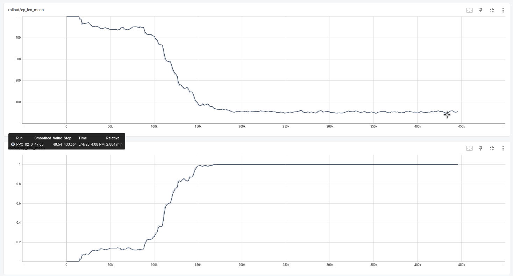
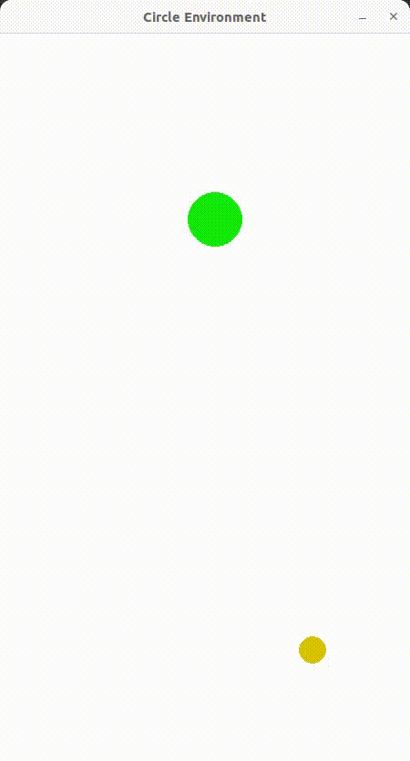

Dotik agenta s pakom
Koda posameznih funkcij v circle_world.py
__init__()
_get_obs()
reset()
self.reset_puck((np.random.uniform(self.object_radius+self.agent_radius*3, self.width - self.object_radius-self.agent_radius*3), np.random.uniform(self.object_radius+self.agent_radius*3, self.height - self.object_radius-self.agent_radius*3)))
step()
_render_frame()
Potek učenja 
